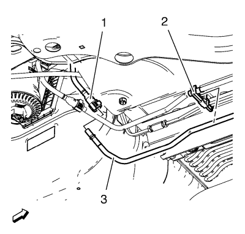
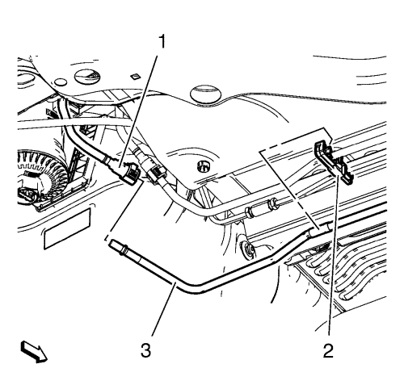
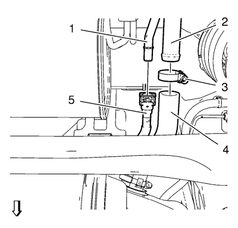
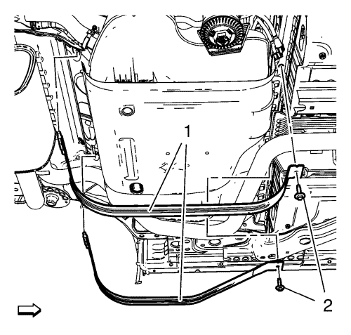
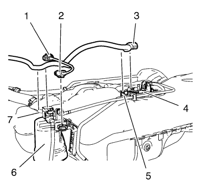
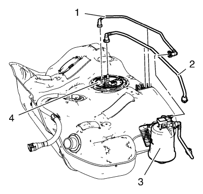
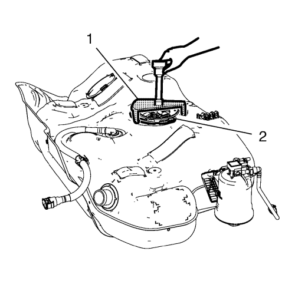
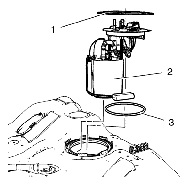
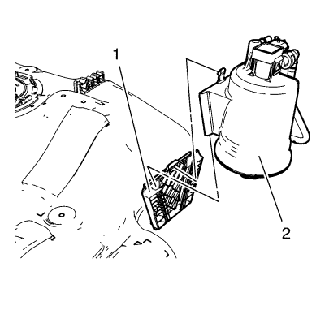

Sustitución del depósito de combustible
Herramientas especiales
EN-48279 Herramienta de desmontaje y montaje del anillo de bloqueo de la bomba de combustible principal
Si desea informarse sobre herramientas regionales equivalentes, consultar Herramientas especiales .
Procedimiento de desmontaje
Advertencia: Consulte Advertencia sobre la gasolina y sus vapores en la sección Prólogo.
- Desconecte el cable negativo de la batería. Consulte Desconexión y conexión del cable negativo de la batería → sin sistema de arranque/parada.
- Vacíe el depósito de combustible. Consultar Drenaje del depósito de combustible .
- Elevar el vehículo y soportarlo de manera segura. Consultar Elevación y soporte en alto del vehículo .

- Desconecte el tubo de retorno de combustible (3) del conector del tubo de retorno de combustible (1). Consultar Servicio del adaptador de conexión rápida del collarín plástico .

- Desconecte el tubo de alimentación de combustible (3) del conector del tubo de alimentación de combustible (1). Consultar Servicio del adaptador de conexión rápida del collarín plástico .

- Desconecte el cierre rápido del tubo de emisiones EVAP (5) del tubo de ventilación del depósito de combustible (1). Consultar Servicio del adaptador de conexión rápida del collarín plástico .
- Afloje la abrazadera del tubo de llenado de combustible (3).
- Desmonte el tubo flexible de llenado de combustible (4) del tubo de llenado de combustible (2).
- Coloque un gato regulable adecuado debajo del depósito de combustible.

- Desmonte los 2 tornillos de abrazadera del depósito de combustible (2).
- Desmonte las 2 abrazaderas del depósito de combustible (1).

- Baje el depósito de combustible lentamente hasta que se alcance el enchufe del mazo de cables de la bomba de combustible (3).
- Desconecte el enchufe del mazo de cables de la bomba de combustible (3) del módulo de la bomba de combustible (4).
- Desconecte los 2 enchufes del mazo de cables del filtro de combustible (1) y (2) del filtro de combustible (6).
- Desenganche el mazo de cables del clip (5) y (7).
- Baje el depósito de combustible.
Procedimiento de desmontaje

- Desmonte el tubo de alimentación de combustible (1) del módulo de la bomba de combustible del depósito de combustible (4) y de la carcasa del filtro de combustible (3). Consultar Servicio del adaptador de conexión rápida del collarín plástico .
- Desmonte el tubo de retorno de combustible (2) del módulo de la bomba de combustible del depósito de combustible (4). Consultar Servicio del adaptador de conexión rápida del collarín plástico .

- Monte la herramienta de desmontaje y montaje EN-48253 en el anillo de bloqueo del módulo de la bomba de combustible.
Nota: NO utilice herramientas de impacto. Se necesita bastante fuerza para soltar el anillo de bloqueo. No se recomienda usar un martillo y un destornillador. Fije el depósito de combustible para que no gire.
- Con la ayuda de la herramienta de desmontaje y montaje EN-48253 y una barra rompedora larga, gire el anillo de bloqueo en sentido antihorario para abrirlo.

- Desmonte el anillo de bloqueo del módulo de la bomba de combustible (1).
- Desmonte el conjunto del módulo de la bomba de combustible (2).
Nota: Levante un poco el módulo de la bomba de combustible.
- Retire y deseche la junta del módulo de la bomba de combustible (3).

- Desmonte el filtro de combustible (2) del soporte del filtro de combustible (1).
- Desmonte la pantalla térmica del depósito de combustible. Consultar Sustitución de la pantalla térmica del depósito de combustible → Gasolina → 2.0L Diésel LLW .
Procedimiento de montaje
- Monte la pantalla térmica del depósito de combustible. Consultar Sustitución de la pantalla térmica del depósito de combustible → Gasolina → 2.0L Diésel LLW .
- Monte el filtro de combustible (2) en el soporte del filtro de combustible (1).
- Monte una junta nueva para el módulo de la bomba (3).
- Monte el módulo de la bomba de combustible (2).
- Monte el anillo de bloqueo del módulo de la bomba de combustible (1).
- Instale la herramienta de desmontaje y montaje EN-48253 (1) en el anillo de bloqueo del módulo de la bomba de combustible (2).
Nota: NO utilice herramientas de impacto. Se necesita bastante fuerza para soltar el anillo de bloqueo. No se recomienda usar un martillo y un destornillador. Fije el depósito de combustible para que no gire.
- Con la ayuda de la herramienta de desmontaje y montaje EN-48253 y una barra rompedora larga, gire el anillo de bloqueo en sentido horario para cerrar el anillo de bloqueo.
- Monte el tubo de retorno de combustible (2) en el módulo de la bomba de combustible del depósito de combustible (4). Consultar Servicio del adaptador de conexión rápida del collarín plástico .
- Monte el tubo de alimentación de combustible (1) en el módulo de la bomba de combustible del depósito de combustible (4) y de la carcasa del filtro de combustible (3). Consultar Servicio del adaptador de conexión rápida del collarín plástico .
Procedimiento de montaje
- Levante el depósito de combustible con un gato regulable que sea adecuado hasta que se alcance el enchufe del mazo de cables de la bomba (3).
- Enganche el mazo de cables en los clips (5) y (7).
- Conecte el enchufe del mazo de cables de la bomba de combustible (3) en el módulo de la bomba de combustible (4).
- Conecte los 2 enchufes del mazo de cables del filtro de combustible (1) y (2) en el filtro de combustible (6).
- Monte las 2 abrazaderas del depósito de combustible (1).
Precaución:Consulte Precaución con las fijaciones en la sección Prólogo.
- Monte los 2 tornillos de abrazadera del depósito de combustible (2) y apriételos a 23 N·m (17 lib. pie).
- Monte el tubo flexible de combustible (4) en el tubo flexible de combustible (2).
- Monte la abrazadera del tubo de llenado de combustible (3).
- Conecte el cierre rápido del tubo de emisiones EVAP (5) en el tubo de ventilación del depósito de combustible (1). Consultar Servicio del adaptador de conexión rápida del collarín plástico .
- Meta el tubo de alimentación de combustible (3) en el conector del tubo de alimentación de combustible (1). Consultar Servicio del adaptador de conexión rápida del collarín plástico .
- Meta el tubo de retorno de combustible (3) en el conector del tubo de retorno de combustible (1). Consultar Servicio del adaptador de conexión rápida del collarín plástico .
- Bajar el vehículo.
- Conecte el cable negativo de la batería. Consulte Desconexión y conexión del cable negativo de la batería → sin sistema de arranque/parada.
| © Copyright Chevrolet. All rights reserved |